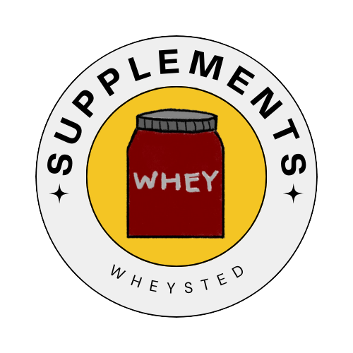

Welcome to Wheysted
Our Products
we provide the best and the finest supplements that a market can offer, we make sure our products are in good condition and effective.

CREATINE
Creatine is a natural supplement often used to improve athletic performance. It may also boost brain function, fight certain neurological diseases, and accelerate muscle growth
Price:₱ 600

PROTEIN BARS
Protein bars are a popular snack food designed to be a convenient source of nutrition. Many people enjoy them because they’re a quick way to add protein and other nutrients to a busy and active lifestyle. Given the wide variety of protein bars on the market, it’s important to know that not all protein bars are created equal. This article reviews whether protein bars are healthy, what benefits they may offer, and the best ways to incorporate them into your lifestyle.
Price:₱ 330
330 for 12 pieces

WHEY
Whey protein is a supplement that some people use alongside resistance exercise to help boost muscle protein synthesis and the growth of lean muscle mass. Other possible benefits include helping with weight loss and lowering cholesterol. Milk is made of two proteins, casein and whey.
Price:₱ 1,600
About Us
We are a trusted supplier of high-quality dietary supplements. Our mission is to provide products that promote health and well-being.
Contact Us
If you have any questions or need assistance, please contact us at info@supplementstore.com